Dominio
El dominio de una función es el conjunto de todos los valores de \(x\) para los que la función está definida.
Se representa por \(D_f\) o \(\operatorname{Dom}(f)\).
¿Cómo calcular el dominio?
A. Polinomios
Están definidos para todos los números reales.
\( f(x)=x^2+3x-1 \)
\( D_f=\mathbb R \)
B. Funciones racionales
El denominador debe ser distinto de cero.
\( f(x)=\dfrac1{x-4} \)
\( x-4\neq0\Rightarrow D_f=\mathbb R\setminus\{4\} \)
C. Raíces de índice par
El radicando debe ser mayor o igual que cero.
\( f(x)=\sqrt{2x-6} \)
\( 2x-6\geq0\Rightarrow D_f=[3,+\infty) \)
D. Logaritmos
El argumento debe ser estrictamente positivo.
\( f(x)=\log(x-2) \)
\( x-2>0\Rightarrow D_f=(2,+\infty) \)
E. Exponenciales elementales
Si \(f(x)=a^x\), con \(a>0\), su dominio es \(\mathbb R\).
Dominio a partir de una gráfica
Para obtener el dominio de una gráfica, proyectamos todos sus puntos sobre el eje X y observamos qué valores quedan cubiertos.
Debemos prestar atención a:
- Los extremos de la gráfica.
- Los puntos excluidos.
- Los huecos.
- Las asíntotas verticales.
- Los intervalos en los que la función no está definida.
Recorrido o imagen
El recorrido es el conjunto de valores que toma la variable dependiente \(y=f(x)\).
Se representa por \(\operatorname{Im}(f)\) o \(\operatorname{Rec}(f)\).
Por ejemplo:
\(f(x)=x^2\)
Como un cuadrado nunca es negativo:
\(\operatorname{Rec}(f)=[0,+\infty)\)
En cambio, para \(g(x)=x^3\), cualquier número real puede obtenerse como imagen:
\(\operatorname{Rec}(g)=\mathbb R\)
Para obtener el recorrido a partir de una gráfica, proyectamos la gráfica sobre el eje Y.
Diferencia fundamental: el dominio recoge los valores de entrada y el recorrido recoge los valores de salida que realmente se alcanzan.
Inyectividad, sobreyectividad y biyectividad
Para entender estos conceptos, recuerda que una función asigna a cada valor de \(x\) un único valor de \(y\).
Importante: para hablar de inyectividad, sobreyectividad y biyectividad, debemos tener claros dos conjuntos:
- Conjunto de partida: \(x\): los valores que podemos introducir en la función.
- Conjunto de llegada: \(y\): los valores en los que puede acabar la función.
Inyectividad, sobreyectividad y biyectividad
- Función inyectiva: dos valores distintos de \(x\) nunca tienen la misma imagen. No se repiten los resultados. Dicho de otra manera: cada valor del conjunto de llegada puede recibir, como máximo, una flecha.
-
- Ejemplo:
\(f(x)=2x+1\)
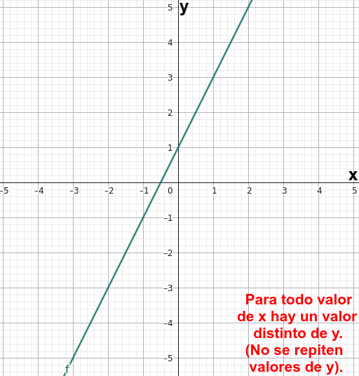
- Función sobreyectiva: todos los elementos del conjunto de llegada tienen al menos una imagen inversa. Se alcanzan todos los valores posibles del conjunto de llegada.
-
- Ejemplo:
\(f:\mathbb{R}\rightarrow \mathbb{R}, \(f(x)=x^3-x^2-x\)
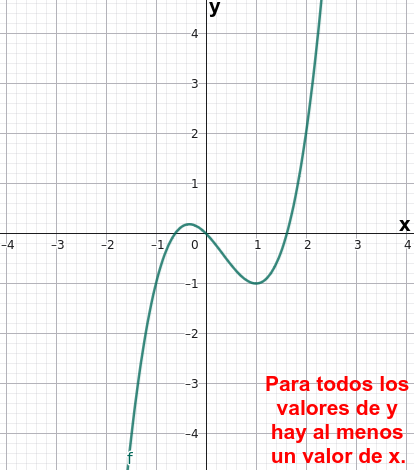
\(g(x)=x^2 \) no es sobreyectiva, porque sólo se alcanza del conjunto de llegada el intevalo \([0,+\infty)\)
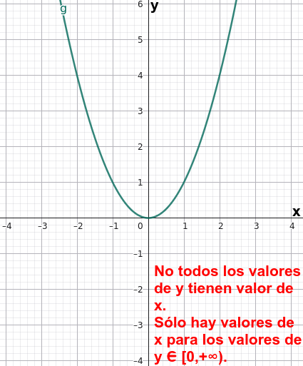
- Función biyectiva: es inyectiva y sobreyectiva a la vez. Cada elemento del conjunto de llegada corresponde a uno y solo un elemento del conjunto de partida.
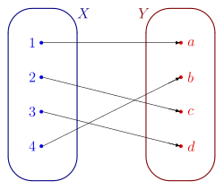
-
- Ejemplo:
\(f(x)=x^3\), de \(\mathbb{R}\) en \(\mathbb{R}\).
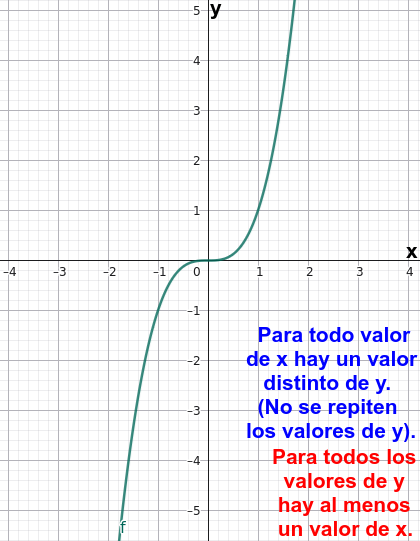
Relación con la función inversa: una función tiene inversa si y solo si es biyectiva.
Para recordar:
| Tipo | Característica |
| Inyectiva | No repite imágenes. |
| Sobreyectiva | Alcanza todos los valores de llegada. |
| Biyectiva | Cumple las dos condiciones. |
Cortes con los ejes
Corte con el eje Y
Todos los puntos del eje Y tienen coordenada \(x=0\).
Por tanto, para hallar el corte con el eje Y, calculamos:
\( f(0) \)
siempre que \(0\) pertenezca al dominio.
El punto de corte es:
\( \boxed{(0,f(0))} \)
Ejemplo:
\( f(x)=2x+4 \)
\( f(0)=4 \)
El corte con el eje Y es \((0,4)\).
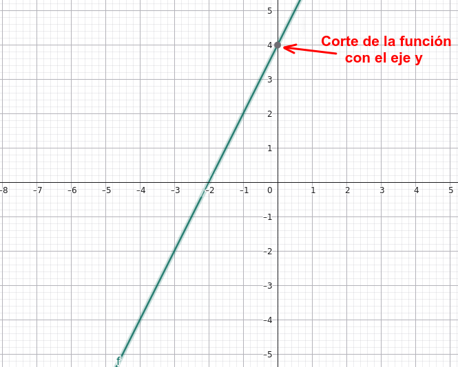
Cortes con el eje X
Todos los puntos del eje X tienen coordenada \(y=0\).
Por tanto, resolvemos:
\( \boxed{f(x)=0} \)
Las soluciones son las raíces o ceros de la función.
Ejemplo:
\( f(x)=x^2-9 \)
\( x^2-9=0\Rightarrow x=\pm3 \)
Los cortes son \((-3,0)\) y \((3,0)\).
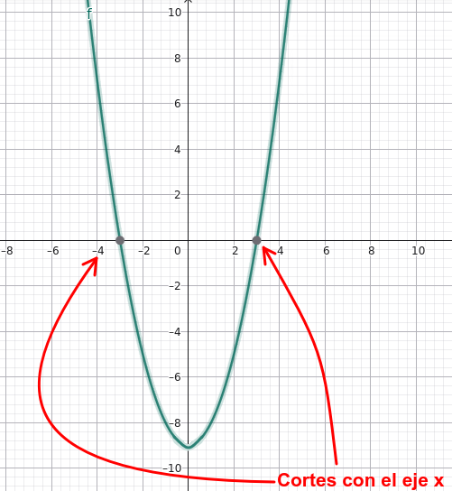
Una función puede tener varios cortes con el eje X, uno solo o ninguno.
Veamos ahora unos vídeos que trabajan los cortes con ambos ejes:
Continuidad y discontinuidades
Una función es continua en un intervalo cuando su gráfica no presenta saltos, huecos ni interrupciones en él.
Por ejemplo:
\(f(x)=x^2\)
es continua en todo \(\mathbb R\).
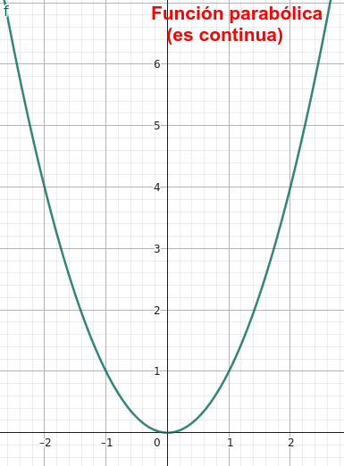
En cambio:
\(f(x)=\dfrac1x\)
no está definida en \(x=0\), por lo que presenta una discontinuidad en ese punto.
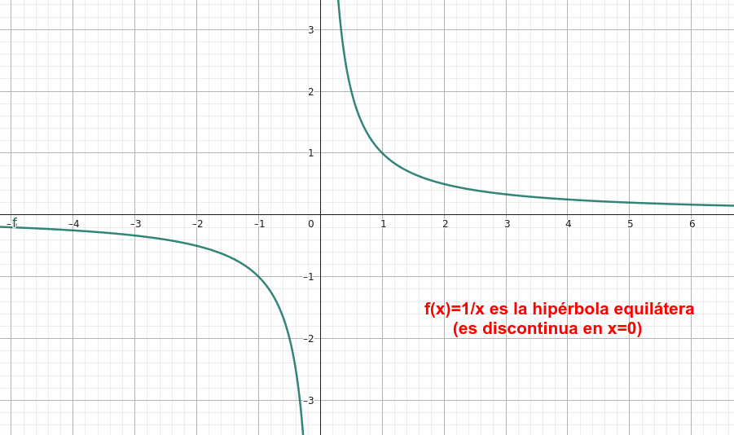
Las discontinuidades más habituales que conviene reconocer gráficamente son:
- De salto: la gráfica presenta un salto entre los dos lados de un punto.
- Evitable: existe un hueco que podría rellenarse asignando el valor adecuado.
- Infinita: la gráfica crece o decrece sin límite al aproximarse a una asíntota vertical.
En las funciones definidas a trozos hay que prestar especial atención a los puntos donde cambia la fórmula.
Crecimiento y decrecimiento
Una función es creciente en un intervalo cuando, al aumentar \(x\), también aumenta \(f(x)\).
Es decreciente cuando, al aumentar \(x\), disminuye \(f(x)\).
Es constante cuando mantiene el mismo valor.
Gráficamente, observamos la curva de izquierda a derecha:
- Si sube, la función crece.
- Si baja, la función decrece.
- Si es horizontal, la función es constante.
Por ejemplo, la función \(f(x)=x^2\):
- Decrece en \((-\infty,0]\).
- Crece en \([0,+\infty)\).
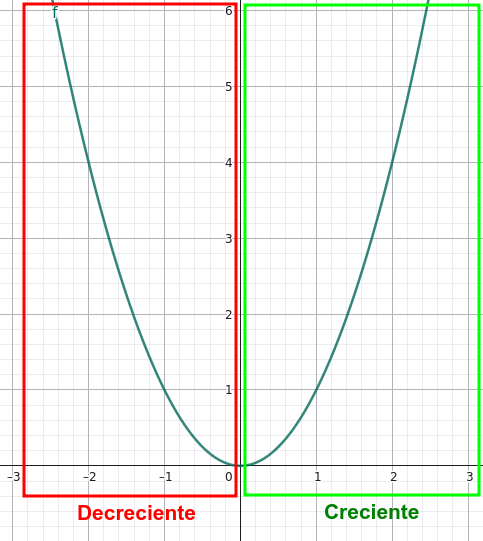
Los intervalos exactos pueden escribirse con extremos abiertos o cerrados según el convenio utilizado y la forma en que se describan los puntos de cambio.
Máximos y mínimos (extremos)
Un máximo es un punto donde la función alcanza un valor superior al de los puntos próximos; un mínimo es un punto donde alcanza un valor inferior al de los puntos próximos.
1. Extremos relativos
Un máximo o mínimo relativo se estudia en comparación con los valores de la función en las proximidades del punto, es decir, en un intervalo centrado en él (entorno que lo contiene).
2. Extremos absolutos
- Máximo absoluto: el mayor valor de toda la función.
- Mínimo absoluto: el menor valor de toda la función.
Por ejemplo:
\( f(x)=x^2 \)
tiene un mínimo relativo y absoluto de valor \(0\), que se alcanza en \(x=0\), y no tiene máximo absoluto en \(\mathbb R\).
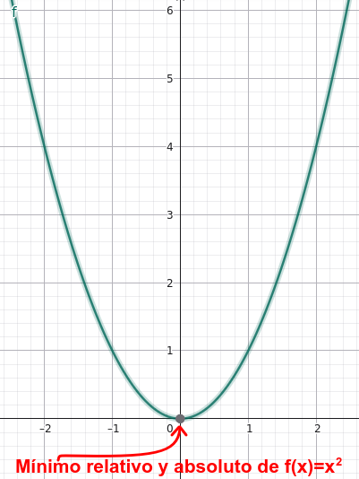
Observación: Es importante distinguir entre el punto donde se alcanza el extremo y el valor extremo. Si en una función cualquiera el vértice es \((2,-3)\), entonces la abscisa es \(2\) y el valor mínimo es \(-3\).
Otro ejemplo:
\( f(x)=-x^2 \)
tiene un máximo relativo y absoluto de valor \(0\), que se alcanza en \(x=0\), y no tiene mínimo absoluto en \(\mathbb R\).
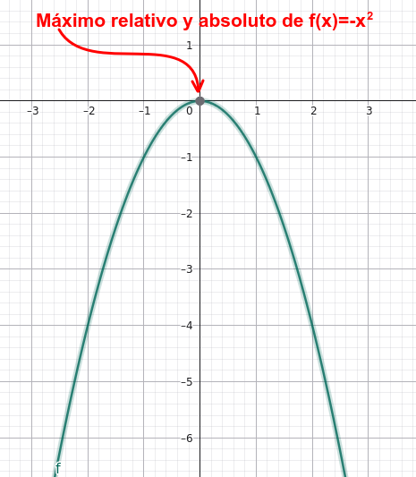
Simetría: funciones pares e impares
1. Función par
Una función es par cuando:
\( \boxed{f(-x)=f(x)} \)
para todos los valores correspondientes de su dominio.
Su gráfica es simétrica respecto del eje Y.
Ejemplo:
\( f(x)=x^2 \)
porque:
\(f(-x)=(-x)^2=x^2=f(x)\)
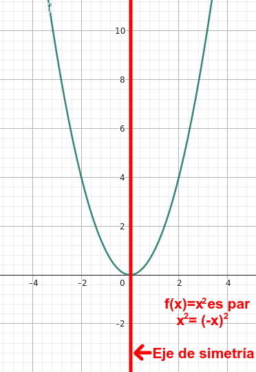
2. Función impar
Una función es impar cuando:
\(\boxed{f(-x)=-f(x)}\)
Su gráfica es simétrica respecto del origen de coordenadas.
Ejemplo:
\( f(x)=x^3 \)
porque:
\( f(-x)=(-x)^3=-x^3=-f(x) \)
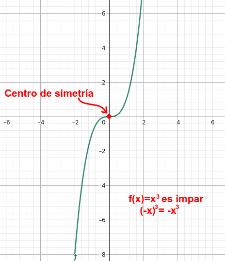
3. Funciones sin estas simetrías
Una función puede no ser par ni impar. Por ejemplo, \(f(x)=x+2\).
Para estudiar la paridad, el dominio debe ser simétrico respecto del cero: si contiene \(x\), debe contener también \(-x\).
Periodicidad
Una función es periódica cuando repite sus valores a intervalos regulares.
Existe un número \(T>0\), llamado período, tal que:
\( \boxed{f(x+T)=f(x)} \)
para todos los valores pertinentes.
Ejemplos:
- Seno: período \(2\pi\).
- Coseno: período \(2\pi\).
- Tangente: período \(\pi\).
- Dec (parte decimal de...): período \(1\).
Una función polinómica no constante, una exponencial elemental y una logarítmica elemental no son periódicas.
Veamos representadas gráficamente las anteriores funciones que se han mencionado:

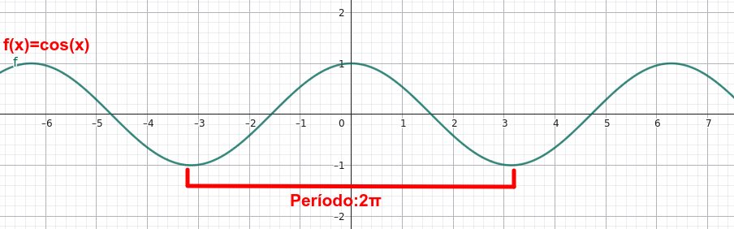

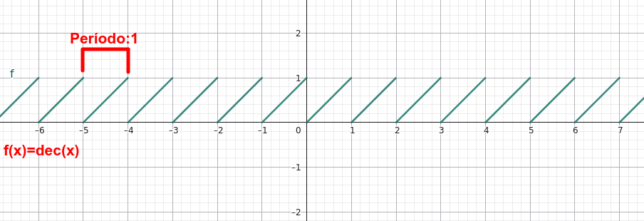
Función inversa
La función inversa deshace la operación de la función original.
Se representa como \(f^{-1}(x)\), y no debe confundirse con el recíproco \(1/f(x)\).
1. Cálculo de la inversa
Consideremos:
\( f(x)=3x-6 \)
Escribimos:
\( y=3x-6 \)
Intercambiamos las variables:
\( x=3y-6 \)
Despejamos \(y\):
\( y=\dfrac{x+6}{3} \)
Por tanto:
\( \boxed{f^{-1}(x)=\dfrac{x+6}{3}} \)
Veámoslo gráficamente:
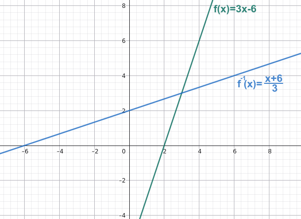
2. Condición de existencia
Para que la inversa sea también una función, la función original debe ser inyectiva: dos valores diferentes de \(x\) no pueden tener la misma imagen.
Una función estrictamente creciente o estrictamente decreciente en todo su dominio es inyectiva.
Por ejemplo, \(f(x)=x^2\) no tiene inversa como función en todo \(\mathbb R\), porque \(f(2)=f(-2)=4\).
Si restringimos su dominio a \([0,+\infty)\), sí tiene inversa:
\( f^{-1}(x)=\sqrt{x},\qquad x\geq0 \)
3. Simetría respecto de \(y=x\)
La gráfica de una función y la de su inversa son simétricas respecto de la recta:
\( \boxed{y=x}\)
Si \((a,b)\) pertenece a la gráfica de \(f\), entonces \((b,a)\) pertenece a la gráfica de \(f^{-1}\).
Además:
\( D_{f^{-1}}=\operatorname{Rec}(f) \)
\( \operatorname{Rec}(f^{-1})=D_f \)
Tasa de variación media
La tasa de variación media (TVM) mide cuánto cambia, en promedio, el valor de una función entre dos valores de la variable independiente.
Entre \(x=a\) y \(x=b\), con \(a\neq b\):
\( \boxed{\operatorname{TVM}_{[a,b]}=\frac{f(b)-f(a)}{b-a}}\)
Es el cociente entre la variación de la función y la variación de \(x\).
1. Interpretación
- TVM positiva: el valor final es mayor que el inicial.
- TVM negativa: el valor final es menor que el inicial.
- TVM cero: la función toma el mismo valor en ambos extremos.
Geométricamente, la TVM es la pendiente de la recta secante que pasa por los puntos \((a,f(a))\) y \((b,f(b))\).
2. Ejemplo resuelto
Sea:
\( f(x)=x^2+1 \)
Calculamos la TVM entre \(x=1\) y \(x=3\).
Primero:
\( f(1)=2,\qquad f(3)=10\)
Después:
\(\operatorname{TVM}_{[1,3]}
=\dfrac{10-2}{3-1}
=\dfrac82=4\)
La tasa de variación media es \(4\).
En una función afín \(f(x)=mx+n\), la TVM es siempre igual a \(m\), la pendiente de la recta.